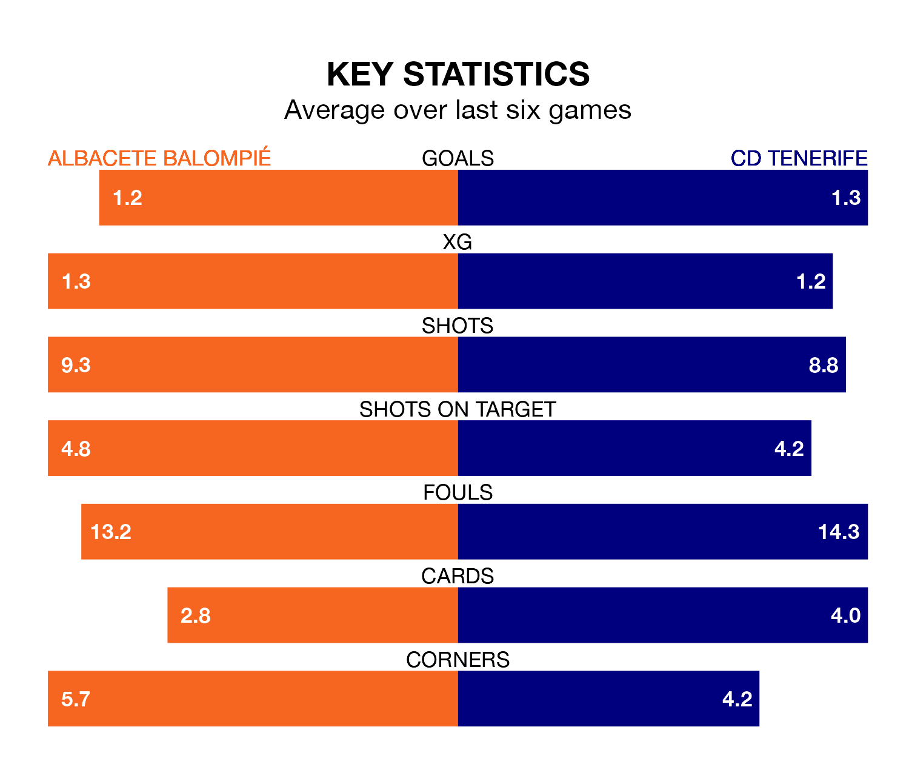

Albacete Balompié are on a terrible run ahead of hosting CD Tenerife at the Estadio Carlos Belmonte on Sunday, with just two points collected from their last six games.
Albacete have picked up two draws and four losses in their last six Segunda División games, and face a Tenerife side whose last six games have brought two wins and two draws.
Albacete are 21st in the table after 34 games, of which they have won seven and drawn 12, earning 33 points.
Tenerife are nine places ahead of the home side in 12th, with 12 wins and nine draws putting them on 45 points.
In the last 10 years, Albacete and Tenerife have played each other on 15 occasions. Albacete won one of them, Tenerife nine, and they drew five times.
On average, Albacete scored 0.8 goals and Tenerife 1.8 in those matches.
Their last meeting was on September 9, when Tenerife won 2-0 at home.
In Juan Soriano Oropesa, the visitors can rely on one of the league's safest pair of hands. He has kept 13 clean sheets in his 34 appearances this season in the Segunda División.
In Albacete's net, Bernabé Barragán Maestre has six clean sheets in 24 games. He has conceded a goal every 72 minutes, 30% more often than the 96 minutes between goals for Soriano Oropesa.
With 32 goals in 34 games so far this season, Tenerife are scoring at below the league average rate with 0.9 goals per game. But they are conceding fewer than average too, letting in 35 goals at a rate of 1.0 per game.
Albacete, meanwhile, are average scorers, with 1.1 goals per game. They have conceded 1.5 goals per game.
Albacete's last match was on Sunday, a 2-1 loss against RCD Espanyol, with Alberto Quiles Piosa getting the goal for Albacete.
Tenerife beat SD Eibar 2-1 last time out, also on Sunday, with Roberto López Alcaide and Ángel Rodríguez on the scoresheet.
Updated: 11:20 (UTC), 09/04/24